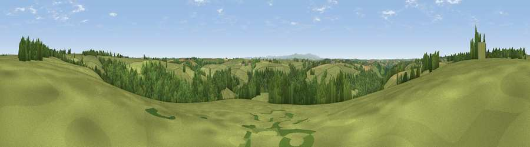

Viewpoint near Chawleigh
#23399 in England · top 42% of its area beats it · near Chawleigh · access?Where it is
The exact computed spot (SS 72275 14075). Click the marker for map links.
Public access: no public right of way or access land is recorded at this exact spot — it may be on private land. Computed from Natural England's CRoW access layer and OpenStreetMap rights of way — not the legal definitive map. Always verify locally.
The view, rendered

A 360° render of this exact spot computed from the terrain model, tree cover and land cover — summer colours, afternoon light, calibrated against photographs of famous viewpoints. Real trees, hedges and buildings will differ in detail.
The panorama
Grey silhouette: terrain skyline in each direction (720 bearings, Earth curvature and refraction included). Dashed green: skyline with trees (+15 m) and buildings (+8 m) as obstacles. Blue strip: how far the ground is visible on each bearing.
Where the view opens
Wedge length = distance to the farthest visible ground on that bearing (vegetation-aware). Rings at 10, 25 and 50 km.
What fills the view
62% grassland · 34% woodland · 3% cropland
Angular shares of the visible panorama (visual magnitude), not map area. Landscape diversity 0.35 (0–1 Shannon).
Key numbers
More beautiful places nearby
The staircase of upgrades: each row has a higher view potential than everything closer. Driving times are estimates from straight-line distance, calibrated against real road routing — check an actual route before setting out.
| Place | Direction | Drive | Score |
|---|---|---|---|
| Viewpoint near Romansleigh | N · 3 km | ~8 min | 54.0 |
| Viewpoint near Chulmleigh | WNW · 4 km | ~8 min | 62.4 |
| Viewpoint near George Nympton | NNW · 8 km | ~15 min | 65.8 |
| Viewpoint near Burrington | WNW · 10 km | ~19 min | 66.4 |
| Viewpoint near Stags Head | N · 15 km | ~27 min | 68.1 |
| Yollacombe Hill | NNW · 17 km | ~30 min | 70.2 |
| Viewpoint near Stockleigh Pomeroy | ESE · 20 km | ~33 min | 74.7 |
| Viewpoint near Stockleigh Pomeroy | ESE · 20 km | ~34 min | 78.9 |
50.91197, -3.81818 · source: screening · position refined by local search. Computed location — check access rights before visiting.